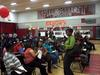

Environment
-
Gas prices drive Angelenos to bus and rail usage
3/22/12, 1:55 p.m.
Public transportation usage in Los Angeles as a whole is up. But what about South L.A.?
-
A Place Called Home: Every home needs a garden
2/23/12, 7:35 a.m.
A Place Called Home -- a local non-profit located on the corner of Central Avenue and 29th Street -- realized that their place couldn't really be called home without a garden.
-
Gardening workshop targets aspiring green-thumbs
2/10/12, 5:51 a.m.
Gardening enthusiasts looking to gain some gardening skills are invited to a workshop on Saturday, February 11 that will lay out the basics of planting and cultivating.
-
Second South L.A. wetlands project makes debut
2/9/12, 2:12 p.m.
Ninth District Councilwoman Jan Perry welcomed city officials and stakeholders to the Thursday morning grand opening of South Los Angeles Wetland Park, a nine-acre urban oasis that's been in the pipeline since 2006.
-
Fruit trees for a healthy initiative in South L.A. and Inglewood
1/12/12, 10 a.m.
Local organizations, city and education district to provide fruit trees for community members in South L.A. and Inglewood.
-
South L.A.'s struggle for more parkland
12/22/11, 3:43 p.m.
South Los Angeles has a severe lack of public land and is trying dig out of that deficit.
-
A pocket park thought lost will indeed be built

12/21/11, 1:20 p.m.
The Vernon Library Pocket Park is slated to be rebuilt after the site was razed to make way for a new elementary school, according to LAUSD.
-
Residents cheer removal of chrome plating factory
12/19/11, 6:39 p.m.
Local organizations, community members and Los Angeles Councilwoman Jan Perry announce the closure of a chrome plating factory that was located nearby an elementary school. Community members said the factory was part of the reason for health complications within the area.
-
Multigenerational housing on the rise in South LA and nationally
10/11/11, 5:23 p.m.
A recent study from the Pew Research Center revealed that the number of Americans living in multi-generational households increased five times faster than the general population from 2007 to 2009.
-
Urban garden and wellness clinic planned for Fremont High
9/29/11, 9:45 p.m.
Students, parents, and community members celebrated a new community partnership that would bring an urban community garden and a 2,500 square-foot community clinic to South L.A. at John C. Fremont High School Thursday.
About Us
OnCentral is a site for the neighborhoods around Central Avenue. It's a news site where we not only provide information, but put the power of storytelling in your hands. Sign up and you can share your story or help an existing story grow by adding in your perspective or corrections.
Follow OnCentral


- Most Viewed
- Most Commented